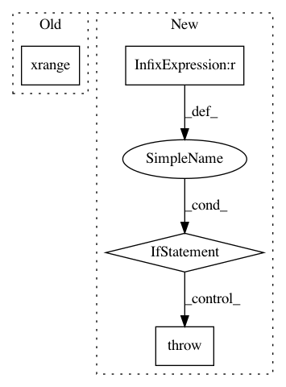

b171c97f2974ef3f884ad9674de137eda7023875,functions/LinearSpectralUnmixing.py,LinearSpectralUnmixing,updateRasterInfo,#LinearSpectralUnmixing#,55
Before Change
// rough estimation of output stats
outStats = {"minimum": -10.0, "maximum": 10.0, "skipFactorX": 10, "skipFactorY": 10}
// repeat stats for all output raster bands
outStats = tuple(outStats for i in xrange(bandCount))
kwargs["output_info"]["bandCount"] = bandCount
kwargs["output_info"]["statistics"] = outStats
After Change
self.coefficients = np.array(list(self.signatures.values())).T
// output bandCount is number of endmembers + 1 residuals raster
if self.coefficients.shape[0] != kwargs["raster_info"]["bandCount"]:
raise Exception("Incoming raster has {0} bands; endmember signatures "
"indicate {1} input bands.".format(
kwargs["raster_info"]["bandCount"], self.coefficients.shape[0]))
// determine output pixel value method
self.applyScaling = kwargs["method"].lower() == "scaled"
outStats = {
"minimum": 0. if self.applyScaling else -10.,
"maximum": 1. if self.applyScaling else 10.,
In pattern: SUPERPATTERN
Frequency: 3
Non-data size: 4
Instances
Project Name: Esri/raster-functions
Commit Name: b171c97f2974ef3f884ad9674de137eda7023875
Time: 2015-03-01
Author: akferoz@esri.com
File Name: functions/LinearSpectralUnmixing.py
Class Name: LinearSpectralUnmixing
Method Name: updateRasterInfo
Project Name: soft-matter/trackpy
Commit Name: fbbe3451b053efcfb7568c4594ff36b2bc2b2437
Time: 2014-12-12
Author: caspervdw@gmail.com
File Name: trackpy/preprocessing.py
Class Name:
Method Name: bandpass
Project Name: tensorflow/cleverhans
Commit Name: 493712d32b2b8440caea7c1b7c706ce52a3f791d
Time: 2017-09-21
Author: aurkor@google.com
File Name: cleverhans/utils.py
Class Name:
Method Name: get_logits_over_interval